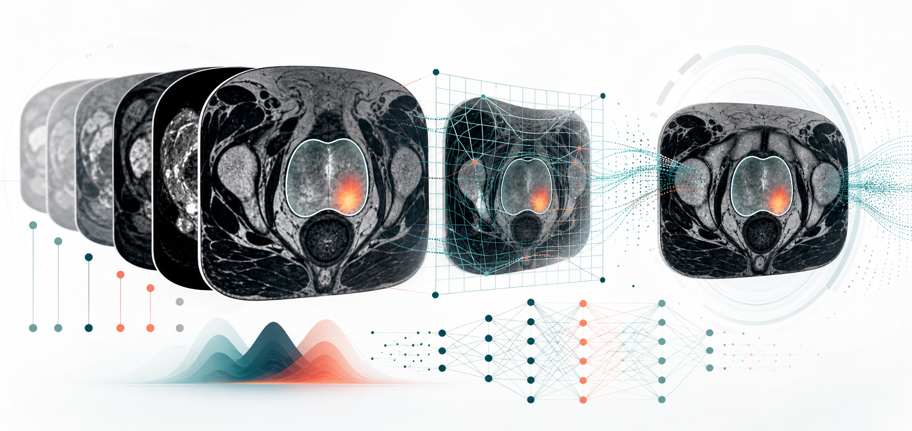

semi-proto-seg
Semi-supervised prostate segmentation using lesion prototypes.
Postdoctoral researcher in prostate cancer AI
I develop computer vision, vision-language, and multimodal learning methods for medical image analysis, with a focus on reliable AI systems for diagnosis, intervention, and clinical research.

Research Summary
My research sits at the intersection of computer vision, large language models, and multimodal medical imaging. I am especially interested in models that connect imaging evidence, spatial correspondence, and semantic prompts for robust clinical AI.
Code and Projects
Selected public repositories that connect my research in prostate MRI, medical image registration, segmentation, and multimodal learning.
Semi-supervised prostate segmentation using lesion prototypes.
Prompt-driven spatial correspondence for medical image registration.
Learning-based medical image registration with gridded control points.
Hierarchical latent-label modelling for multi-site prostate lesion segmentation.
Hypernetwork research code related to multimodal MRI combination.
U-Net implementation with an upsampling layer under Caffe.
Experience
Medical Physics and Biomedical Engineering, University College London
Department of Electrical Engineering, City University of Hong Kong
City University of Hong Kong
Beihang University
Dalian University of Technology
Selected Publications
2026
Wen Yan, et al. MICCAI2026.
2026
Wen Yan, et al. Medical Physics.
2025
Wen Yan, et al. Physics in Medicine & Biology.
2025
Wen Yan, et al. IEEE ISBI.
2024
Wen Yan, et al. Medical Image Analysis.
Contact